AI Academy · Level 4 · Grade 9 · Week 17 · Student lesson
Precision and Recall
Learn to understand, design, build, test and explain AI systems responsibly.
Project: Responsible Plant Classifier
Before you start
Week 15: identify predicted-positive and actual-positive totals.
Plan time to read, investigate and explain. Keep predictions separate from observations.
Student lesson · 1 of 16
Your mission
Your learning target
I can choose the denominator that answers the question.
I can calculate precision and recall with a declared positive class.
I can report undefined ratios honestly.
Remember before reading
Close your notes first. A rough first answer helps us choose the right starting point; it is not a score for your ability.
Without opening the old lesson, explain one key idea from Accuracy and Imbalance. Give an example and a mistake that the idea helps you avoid.
Without opening the old lesson, explain one key idea from Scores and Calibration Intuition. Give an example and a mistake that the idea helps you avoid.
Without opening the old lesson, explain one key idea from Decision Trees. Give an example and a mistake that the idea helps you avoid.
After trying, check the relevant lesson or ask your teacher. Change the part of your explanation that the evidence shows was wrong.
Precision measures how many positive predictions are right; recall measures how many actual positives are found.
Builder name and experiment date:
Readiness for the connected explanation
Why can 80 percent accuracy hide missed blocked cases?
This week’s end goal
By the end, I can explain precision and recall using a traced example and a stated limitation.
Student lesson · 2 of 16
Notice the evidence
PICTURE ENTRY
Notice → Predict → Explain
Begin with visible evidence; do not explain more than the picture and information support.
Name three visible details without interpreting them.
Predict the data, model, or evaluation decision being made.
Identify one hidden assumption that could change the result.
State what evidence would confirm or reject your prediction.
My prediction and supporting evidence:
A closer explanation
Blocked remains positive. Precision asks: of the cases flagged blocked, how many were actually blocked according to the reference? Recall asks: of all reference-blocked cases, how many were found? Both use true positives, but they answer different questions. Keep reference rows and prediction columns ordered clear then blocked.
Use fictional classroom data throughout this investigation. Keep the task, units, reference labels and data split visible as you reason. Earlier weeks supplied the model-building process; this week examines precision recall and denominators.
Student lesson · 3 of 16
See how it works
ML MECHANISM
Input → Model → Evidence
Trace the information, fitted behavior, and evaluation proof separately.
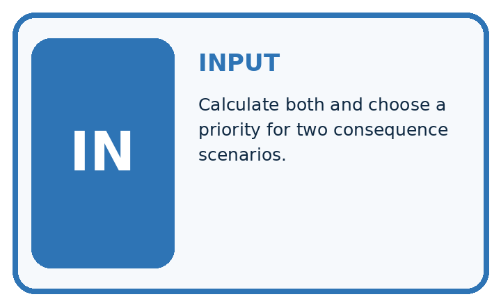
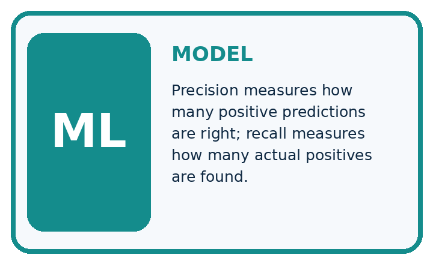
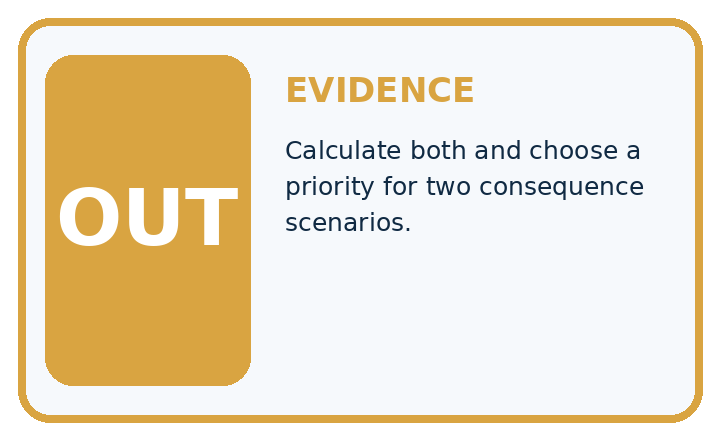
QUESTION Calculate both and choose a priority for two consequence scenarios.
MODEL IDEA Precision measures how many positive predictions are right; recall measures how many actual positives are found.
PROOF NEEDED Use an unseen case, visible calculation, error analysis, and a stated limitation.
Draw a fresh data → model → prediction → evaluation trace:
A closer explanation
For matrix [[12, 4],[1, 3]], TN=12, FP=4, FN=1, TP=3. There are seven predicted positives and four reference positives. Precision is 3/7, about 42.9 percent. Recall is 3/4=75 percent. Accuracy is 15/20=75 percent. A correct denominator matters more than memorizing a percentage.
tn, fp, fn, tp = 12, 4, 1, 3
precision = tp / (tp + fp) if tp + fp else None
recall = tp / (tp + fn) if tp + fn else None
accuracy = (tn + tp) / (tn + fp + fn + tp)
print(precision, recall, accuracy)
# None means unavailable, not zero or perfect.Trace the calculation on paper before running this optional Python check. Use the stated fictional inputs and compare intermediate values. The code checks this example; your independent workbook case uses different evidence.
Connect the picture and the explanation
Point to the input, the deciding step and the result in this week’s visual. Explain the same step in ordinary words. A picture helps when you can say what each part represents.
Student lesson · 4 of 16
Compare the cases
EVALUATION DESIGN
Four Tests, Four Kinds of Evidence
A system is not understood until it survives more than one comfortable example.


NORMAL Expected data and expected behavior.
BOUNDARY Value close to a threshold, ambiguous label, or uncertain prediction.
MISSING Necessary field, label, source, or measurement is unavailable.
SHIFTED New lighting, species, device, subgroup, or time condition.
Which case most threatens today's claim, and why?
Change one thing in the pictured case
Change: Correct two false negatives into true positives.
Prediction: Precision becomes8/10=80%; recall becomes8/10=80%.
Reason: TP becomes8 and FN 2; FP remains2, so the two denominators happen to equal10.
Student lesson · 5 of 16
Words that unlock the idea
VOCABULARY
Words You Can Calculate and Defend
A definition matters when it lets you interpret a new dataset, model, or result.
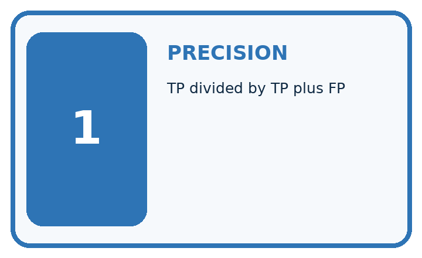
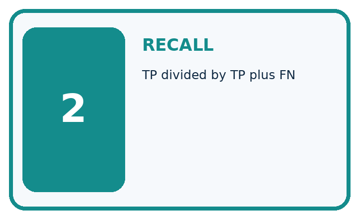
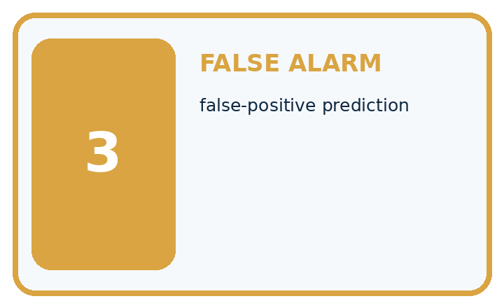
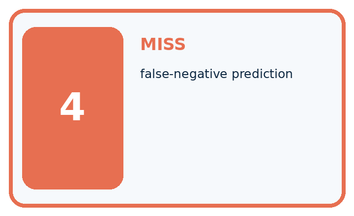
| Term | Precise meaning | My ML example |
|---|---|---|
| precision | TP divided by TP plus FP | |
| recall | TP divided by TP plus FN | |
| false alarm | false-positive prediction | |
| miss | false-negative prediction |
Repair the claim using a definition, calculation, or test record:
Words used in the closer explanation
| Word | Meaning |
|---|---|
| Precision | True positives divided by all predicted positives |
| Recall | True positives divided by all reference positives |
| Denominator | The group counted in the bottom of a fraction |
| Undefined | A ratio with no valid value because its denominator is zero |
Student lesson · 6 of 16
Follow a worked example
WORKED EVIDENCE
Reason Step by Step
Predict first. Then check each step. A correct answer without visible evidence cannot be audited.
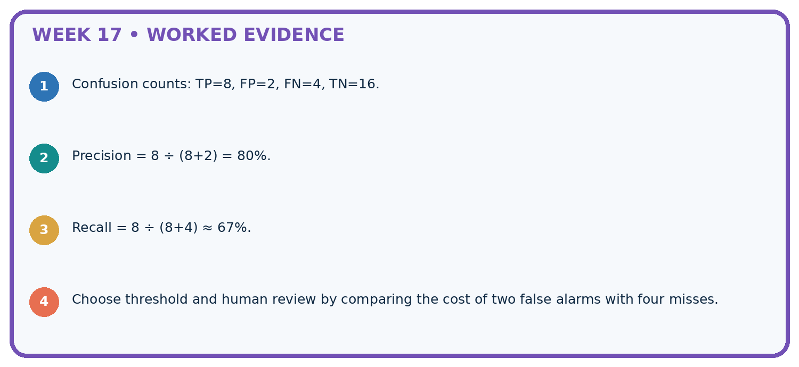
STEP 1 Confusion counts: TP=8, FP=2, FN=4, TN=16.
STEP 2 Precision = 8 ÷ (8+2) = 80%.
STEP 3 Recall = 8 ÷ (8+4) ≈ 67%.
STEP 4 Choose threshold and human review by comparing the cost of two false alarms with four misses.
Recalculate, retrace, or restate the evidence independently:
A closer explanation
Precision recall and denominators at a glance
Learn from the worked case
Cover the result before checking it. Say what is given, choose the procedure, and follow one step at a time. Then uncover the result and explain your first mismatch. Ask why a step is allowed, not only what number it produces.
A pictorial worked case: Precision and Recall
Put precision and recall denominators on the picture instead of memorising names.
The facts we will use
Positive means spotted. TP=6, FP=2, FN=4, TN=8 in twenty fictional leaves.
All inputs and outcomes in this worked example are invented classroom data; no real model run is claimed.


Read the picture one step at a time
Why this result follows
Read the picture in order. Precision asks how reliable flags are; recall asks how many spotted leaves were caught. The arrows show which recorded input or intermediate result each decision uses. Explain the deciding step aloud before checking the changed case; pointing to the final answer alone does not show how it follows.
What this example does not establish
If a relevant denominator is zero, report that metric as undefined under the chosen convention rather than silently inventing success.
Read the labelled picture: Were the original precision and recall denominators the same? Point to the relevant step in the picture, then write the changed result and the rule or evidence that supports it.
Change one thing: Correct two false negatives into true positives. Predict the result before checking the explanation. What remains the same?
Student lesson · 7 of 16
Find and repair a mistake
ERROR DETECTIVE
Compare → Diagnose → Repair
Do not patch the answer. Find the earliest unsupported assumption, data problem, or experiment error.
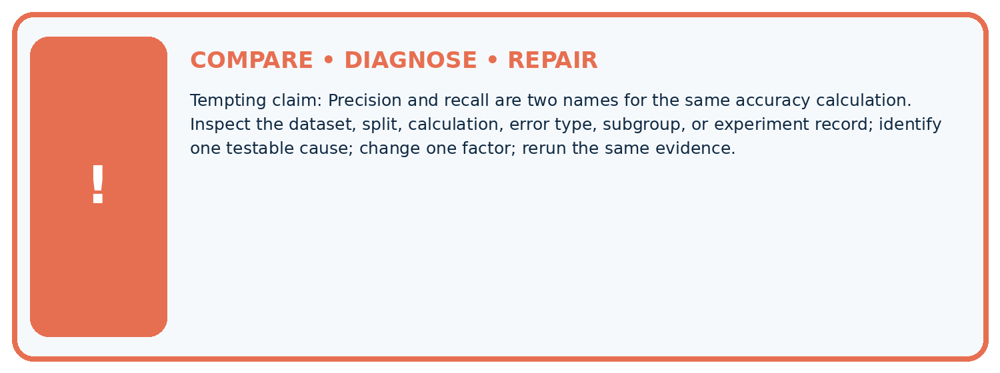
| Evidence record | Expected | Actual | Likely cause / next test |
|---|---|---|---|
| normal case | passes | ||
| boundary case | defined behavior | ||
| missing case | safe fallback | ||
| shifted case | measured limit |
Diagnose one cause and name the cleanest next experiment:
A closer explanation
Ratios describe this evaluation set, not a guarantee for an individual case. Library zero-division policies differ; document yours. Do not select a metric only after seeing which one makes a model look best.
Student lesson · 8 of 16
Practise together
ML STUDIO
Specify Before You Run
A trustworthy result can be reproduced from the recorded data, code, settings, and evaluation rule.

Experiment record
QUESTION + intended use + success threshold
DATA version + grouped split + leakage check
CODE/preprocessing + features + model + settings + seed
METRICS + positive class + units + denominators
PREDICTIONS + errors + subgroup slices + limitations
HUMAN reviewer + release, revise, limit, or stop decision
Write the minimum record needed to reproduce today's result:
A closer explanation
With [[16, 0],[4, 0]], there are no predicted positives. Precision is undefined because its denominator is zero; recall is 0/4=0. With [[16, 4],[0, 0]], recall is undefined because no reference positives were evaluated. Record counts and the undefined result instead of calling it perfect.
Practise with less help: Calculate both ratios
Use workbook W2 for the connected example “Precision recall and denominators”. First fill the input and rule boxes. Try the middle steps before asking for a hint. After a hint, try the next step yourself.
| Plan | Do | Check |
|---|---|---|
| What is given? Which rule or procedure applies? | Record each intermediate step. | Does the result follow? What remains unknown? |
Explain your trace to a partner. Your partner points to one step to check. Swap roles on the next case. Each person writes their own explanation.
Check your reasoning
Use the worked case for Precision recall and denominators. Proposed explanation: “A final answer is enough”. Decide whether this explanation is supported. Point to the step or supplied fact that decides; explain your repair if needed.
Answer on your own before discussion. If you are unsure, say which step you need help with.
Explain the picture
Were the original precision and recall denominators the same? Point to the relevant step in the picture, then write the changed result and the rule or evidence that supports it.
This is supported practice. Keep the separately named independent case for an attempt before feedback.
Student lesson · 9 of 16
Run the investigation
EVIDENCE LAB
Predict → Run → Calculate → Interpret
Keep the test conditions fixed, record every result, and change only one planned factor.
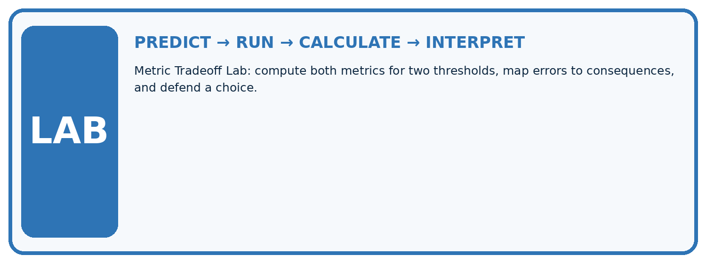
1. Write the hypothesis and expected evidence before running.
2. Metric Tradeoff Lab: compute both metrics for two thresholds, map errors to consequences, and defend a choice.
3. Run one normal, one boundary, one missing, and one shifted case.
4. Calculate the metric from raw counts or row-level errors.
5. Interpret what changed, what did not, and what remains unsafe or unknown.
| Case | Prediction | Actual | Calculation / evidence | Meaning / next test |
|---|---|---|---|---|
| Normal | ||||
| Boundary | ||||
| Missing | ||||
| Shifted |
Plan → try → check
Before trying: what do I expect, and why? While trying: which step could first go wrong? Afterwards: what did I actually observe, and what should change? Keep “not run” if you only traced the procedure.
Student lesson · 10 of 16
Build your understanding
MASTERY
From Knowing the Word to Owning the Idea
Move upward only when you can produce evidence without copying the example.

DEFINE Use all four terms precisely: precision, recall, false alarm, miss.
CALCULATE Reproduce the worked evidence with units and denominator.
TRACE Explain the data, code or decision path.
DIAGNOSE Precision and recall are two names for the same accuracy calculation.
TRANSFER Solve a fresh dataset or model case.
IMPROVE Change one cause and rerun fixed evidence.
DEFEND State intended use, metric, limitation, and human responsibility.
Student lesson · 11 of 16
Connect your project
CUMULATIVE PROJECT
Responsible Plant Classifier
Every week adds one reviewable artifact to the same evidence-based capstone.
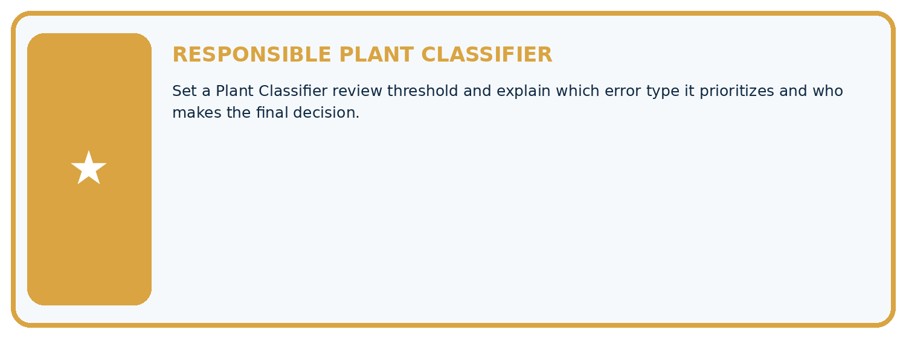
Which requirement or risk does this artifact address?
Which dataset, split, code, and metric version does it use?
What normal and shifted cases were tested?
What remains uncertain or weak?
What decision still belongs to a teacher or qualified human?
My evidence-linked project decision:
Evidence for your project
For your Responsible Plant Classifier, save the input, procedure, observed result and limitation of this check. Label this worked example as practice; use a different, previously unreviewed case when checking independent understanding.
Student lesson · 12 of 16
Show what you know
INDEPENDENT PROOF
Explain • Calculate • Transfer • Defend
Complete this with a fresh case after guided practice and compare it with the mastery criteria.
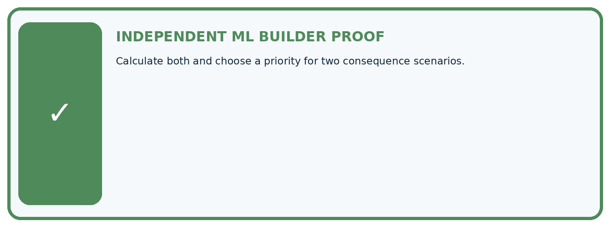
□ Define the task, feature/target roles, and intended-use boundary.
□ Show the calculation, code trace, or experiment record.
□ Test a normal case and one revealing boundary, missing, or shifted case.
□ Diagnose one failure without changing several factors at once.
□ Name a limitation, fairness concern, and the human-review action.
Independent evidence and defense:
My level: □ Not yet □ With one hint □ Independently □ I can teach and defend it
Student lesson · 13 of 16
Study a complete case
Week 17 Worked case
Use the supplied details to practise the weekly concept before attempting the independent question. This case extends the illustrated lesson.
The situation
Positive is spotted: TP=8, FP=2, FN=4.
The question
Compute precision and recall.
Worked explanation
Precision=8/10=80%; recall=8/12 about 66.7%. Denominators are predicted positives and actual positives respectively.
Explain it in your own words
Which detail supports the answer, and why does it matter?
Trace the supplied case visually
Precision and recall use different denominators
| Evidence or stage | Value or result |
|---|---|
| Precision, predicted positives | 8/10 |
| Recall, actual positives | 8/12 |
Positive is spotted: TP=8, FP=2, FN=4.
Compute precision and recall.
Precision=8/10=80%; recall=8/12 about 66.7%. Denominators are predicted positives and actual positives respectively.
Student lesson · 14 of 16
Try a new case independently
Independent case: Apply independently
Use [[8, 2],[3, 6]]. Give TP, FP, FN, precision, recall and accuracy.
Attempt this case before feedback. Record any help. Earlier examples below are further practice; a case already practised with feedback cannot establish fresh transfer.
Week 17 Independent application
Close the worked explanation. Apply the idea to this different question without copying.
With disease positive, TP=6, FP=2 and FN=4. Calculate precision and recall, showing both denominators.
My answer, with a trace, calculation or supporting evidence
Create and test
Change one relevant detail. Predict the result before testing. Include a boundary or missing-information case when it helps reveal a limit.
My changed input and expected result
Connect to your project
Set a Plant Classifier review threshold and explain which error type it prioritizes and who makes the final decision.
The evidence I will keep
Your teacher has the independent answer and scoring criteria. Complete the matching workbook week to keep your practice evidence together.
Transfer practice from the original programme
TP=9,FP=3,FN=6,TN=12. Compute precision and recall. What happens to precision when a system predicts no positives?
Use feedback to improve
Attempt the independent case before hints. Record whether you worked alone, used a hint or followed a model. After feedback, fix the first unsupported step and explain why it changed. A later check uses a changed case, not a copied answer.
Student lesson · 15 of 16
Your lesson route
Start with this question: Put precision and recall denominators on the picture instead of memorising names.
| By the end, I can | How I will show it |
|---|---|
| Choose the denominator that answers the question | Explain the deciding step, show a trace or test, and state one limit. |
| Calculate precision and recall with a declared positive class | Explain the deciding step, show a trace or test, and state one limit. |
| Report undefined ratios honestly | Explain the deciding step, show a trace or test, and state one limit. |
Remember → watch and explain → try with help → investigate → try independently → keep project evidence. Your teacher may spread this lesson across several classes.
Keep your first prediction. Compare it with what the evidence shows and explain any change.
Student lesson · 16 of 16
Finish and return
Close your notes. Explain this goal in your own words: Choose the denominator that answers the question
If you are unsure, return to the worked picture and explain one arrow. If you are ready, change an input or assumption and justify your prediction.
Save your workbook evidence. At the next review, try a different case before opening your old answer.